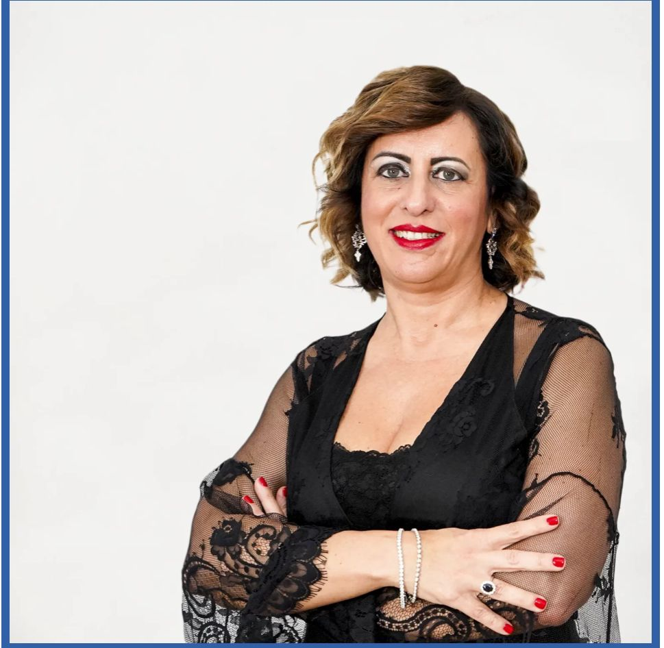
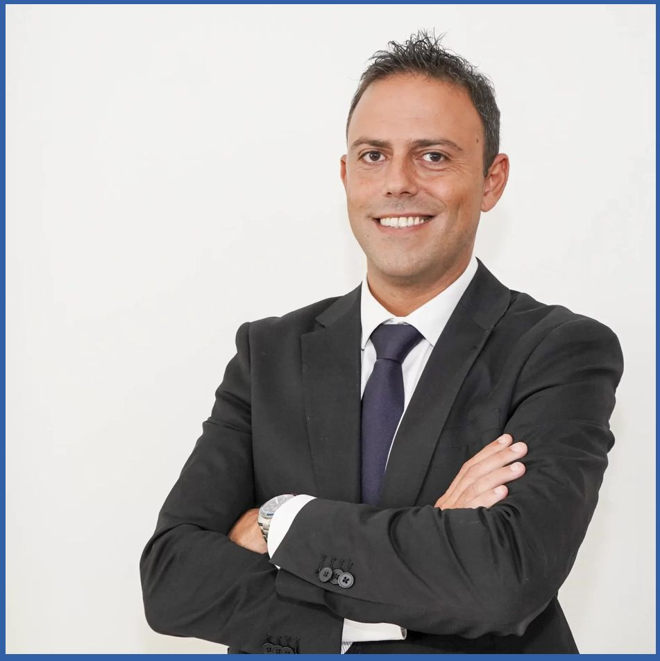

Co-Founder e CEO di ExeoLab, Anna Maria Gentile ha oltre 25 anni di esperienza nel settore della consulenza strategica e dell'internazionalizzazione.Laureata in Economia con Master in Pianificazione territoriale e Valutazione di processi formativi. Ha lavorato per oltre 20 anni al vertice di società di consulenza nazionali, coordinando assistenze tecniche su fondi strutturali, a livello ministeriale e regionale. È altamente specializzata nei processi di integrazione dei sistemi istruzione, formazione e lavoro.
Co-Founder e Head of International Projects Area, Nicola Vita è un esperto di pianificazione strategica e creazione di reti internazionali. Laureato in Economia con Master in Web Marketing. Per oltre dieci anni ha lavorato nel settore della consulenza a PMI e PA, in particolare nel campo delle politiche di sviluppo rurale e locale. Si è poi specializzato nella cooperazione transnazionale fino a diventare promotore di network tematici internazionali in materia di project design & management.
